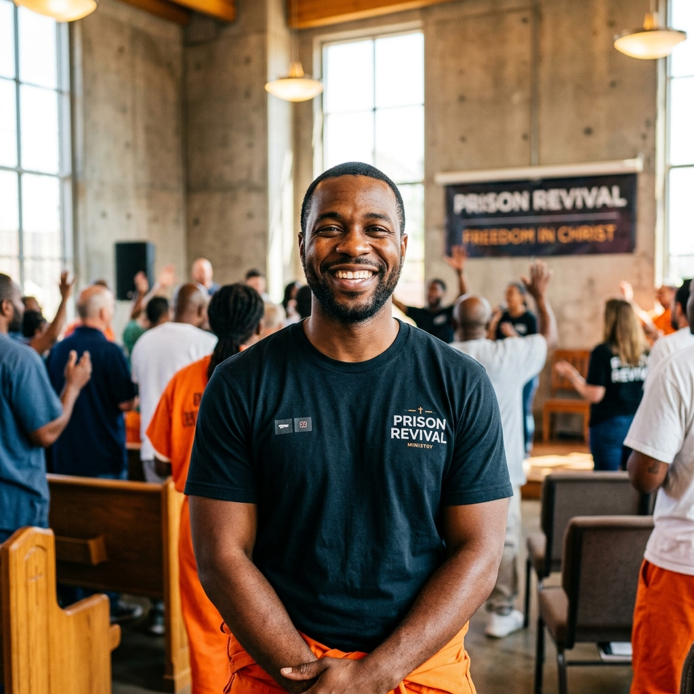

유튜브 채널
다양한 채널을 통해 프리즌 리바이벌의 소식을 만나보세요.


사역소개
프리즌 리바이벌이 걸어온 길과 사역의 비전을 소개하는 영상입니다.
3주년 예배 스케치
프리즌 리바이벌 창립 3주년 감사예배의 감동적인 순간들을 담았습니다.

 Prison Revival
Prison Revival
다양한 채널을 통해 프리즌 리바이벌의 소식을 만나보세요.

프리즌 리바이벌이 걸어온 길과 사역의 비전을 소개하는 영상입니다.
프리즌 리바이벌 창립 3주년 감사예배의 감동적인 순간들을 담았습니다.